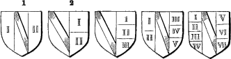
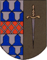
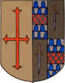
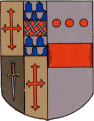
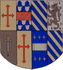
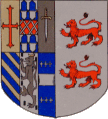
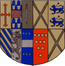
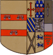
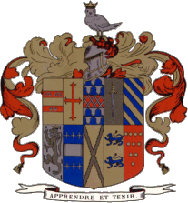

Marshalling is the art of arranging several coats of arms in one shield, for the purpose denoting the alliances of a family.
Before marshalling was introducing rare instances occur of arms composed, i.e. when an addition of a portion of the arms of a wife has been made to those of the husband. The instance usually quoted(though of most doubtful authority) is that of Henry II. taking an additional lion upon his marriage with Eleanor of Guienne.
a. Impaling. The simplest and earliest way of placing the arms of a husband and wife was side by side. Shields thus placed are said to be accolées, or in collateral position. Contemporary with this practice, but continuing much longer, was the custom of impaling arms by dimidiation, the dexter half of the husband's arms being joined to the sinister half of the wife's.
This was much practised about the time of King Edward I. The arms of Aylmer de Valence, Earl of Pembroke and Montgomery, and Mary his wife, daughter of Guy de Chastillon, may be taken as an example. They are borne by Pembroke Hall, Cambridge, founded by the latter in 1343.
Barry of ten argent and azure, over all ten martlets in orle gules, for VALENCE.
Vair, three pallets gules, on a chief or, a label of three points azure, for arms borne by CHASTILLON.
In some cases the husband's arms only were dimidiated, the wife's being borne entire. The implement, whether of whole or dimidiated arms, was referred to by Heralds as Baron et Femme.
An early instance of dimidiation, though rudely represented, occurs on a brass in Stanton Harcourt Church, Oxfordshire, which commemorates Sir Richard Harcourt(ob. 1330), who married Margaret, daughter of Sir John BEKE of Eresby.
Gules, two bars or(for HARCOURT) impaled with gules, a cross moline[or sarcelly] argent(for BEKE).
Dimidiation in many cases, however, was found inconvenient, and was exchanged for impaling the coats entire, though bordures, tressures, and orle were usually omitted(as they are still) on the side next the line of impalement.
An an instances of impaling an example form the arms in Dorchester Church, Oxfordshire, is given.
Sable, a lion rampant argent crowned or, for SEGRAVE.
Or, a saltire engrailed sable, for BUTTETOURT.
In a few early instances, in which the wife was of much higher rank than the husband, her arms were placed upon the dexter side; a seal of John of Ghent, as King of Castile and Leon, is an example.
When the wife is an heiress(even in expectation) it is now customary for the husband to bear her arms upon an escutcheon or pretence; but it is evident that until the husband has issue by the heiress, and until the death of her father, he should merely impale her arms; because until then be cannot transmit her inheritance to his posterity. Instances might be cited of husbands bearing their wives' arms both upon an escutcheon of pretence over their own, and also as an implement.
Many modern heralds condemn the practice of a knight impaling the arms of his wife within the garter or collar of his order, but there are may precedents for so doing. The widow of a knight, though she continues to impale the arms of her deceased husband in a lozenge, must of course relinquish his insignia of knighthood.
When a man marries a second wife, he should certainly cease to impale the arms of the first. Some, however, have thought proper to impale both, which may be done in two ways, as shewn in the annexed cuts(figs. 1, 2), the bend shewing the position of the man's arms, and the numerals those of his wives. The other figures shew how the arms of three, five, and seven wives might have been borne, or at least represented. When a widow of a peer marries a second time, her second husband impales her paternal arms only.
|  |
| Various modes of impaling Wives' arms. |
|  |
|  |
|  |
|  |
|  |
|  |
|  |
|  |
{kind=link}
{kind=link}
{kind=link}
{kind=link}
{kind=link}
{kind=link}
{kind=link}
{kind=link}
{kind=link}